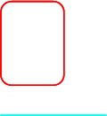
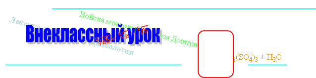
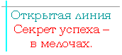

 |
 |
|
|
Простейшие тригонометрические уравнения Тригонометрическое уравнение – это уравнение, содержащее неизвестное под знаком тригонометрической функции. Простейшими тригонометрическими уравнениями называют уравнения вида
Уравнение cos x = a. Принцип:
Формулы:
Пример 1: Решим уравнение √3 Решение. Применим первую формулу: √3 Сначала находим значение арккосинуса: √3 π Осталось подставить этот число в нашу формулу: π Пример решен.
Пример 2: Решим уравнение √3 Решение. Сначала применим первую формулу из таблицы: √3 Теперь с помощью второго уравнения вычислим значение арккосинуса: √3 √3 π π π 6π π 5π Применяя формулу для -а, обращайте внимание на знак а: он меняется на противоположный. Осталось подставить значение арккосинуса и решить пример: 5π Пример решен.
Уравнение sin x = a. Принцип:
Формулы. (1 из 3)
√3 Решение. Применяем первые две формулы: √3 √3 Находим значение арксинуса: √3 π Осталось подставить это значение в наши формулы: π
π 2π Пример решен.
Пример 2: Решим это же уравнение с помощью общей формулы. Решение. π Пояснение: если n будет четное число, то решение примет вид № 1; если n будет нечетным числом – то вид №2. Пример решен.
(2 из 3)
Пример 1: Вычислим arcsin 0. Решение. Пусть arcsin 0 = x. Тогда sin x = 0, при этом x ∈ [–π/2; π/2]. Синус 0 тоже равен 0. Значит: x = 0. Итог: arcsin 0 = 0. Пример решен.
Пример 2: Вычислим arcsin 1. Решение. Пусть arcsin 1 = x. Тогда sin x = 1. Число 1 на оси ординат имеет имя π/2. Значит: arcsin 1 = π/2. Пример решен.
(3 из 3)
Пример: Решить уравнение √3 Решение. Применяем формулы: √3 √3 √3 √3 π Подставляем это значение arcsin в обе формулы: π Пример решен.
Уравнение tg x = a. Принцип:
Формулы. (1)
(2)
Решение. Пусть arctg 1 = x. Тогда tg x = 1, при этом x ∈ (–π/2; π/2) Следовательно: π π π
Пример 2: Решить уравнение tg x = –√3. Решение. Применяем формулу: x = arctg (–√3) + πk Решаем: arctg (–√3) = –arctg √3 = –π/3. Подставляем: x = –π/3 + πk. Пример решен.
Уравнение ctg x = a. Принцип:
Формулы. (1)
(2)
Решение. Следуем принципу: arcctg √3 = х ctg х = √3. х = π/6. Ответ: arcctg √3 = π/6 Пример 2: Вычислить arcctg (–1). Решение. Применяя формулу (2), обращайте внимание на знак а: он меняется на противоположный. В нашем примере –1 меняется на 1: arcctg (–1) = π – arcctg 1 = π – π/4 = 3π/4. Пример решен.
|
 www.zvuk.a5.ru |